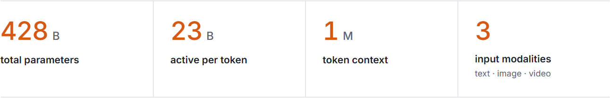
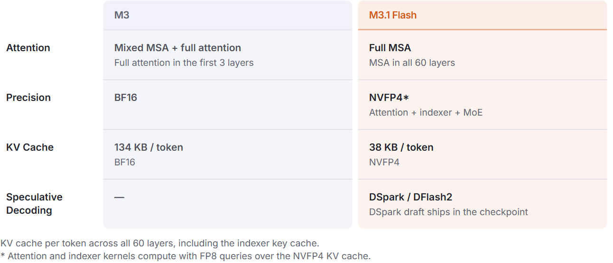
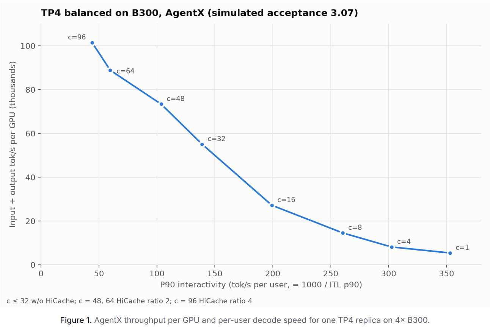
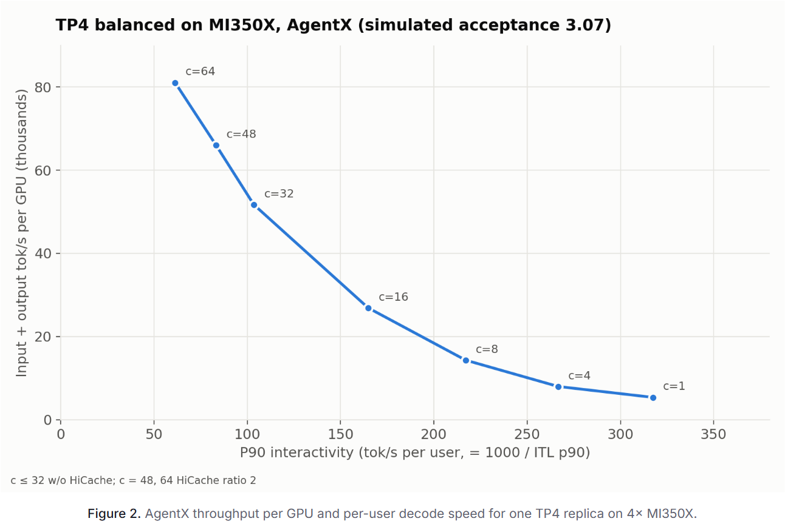
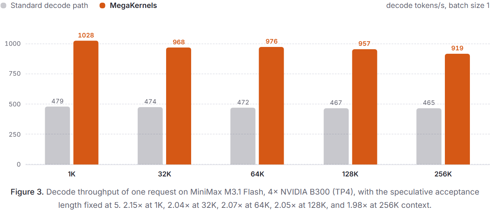
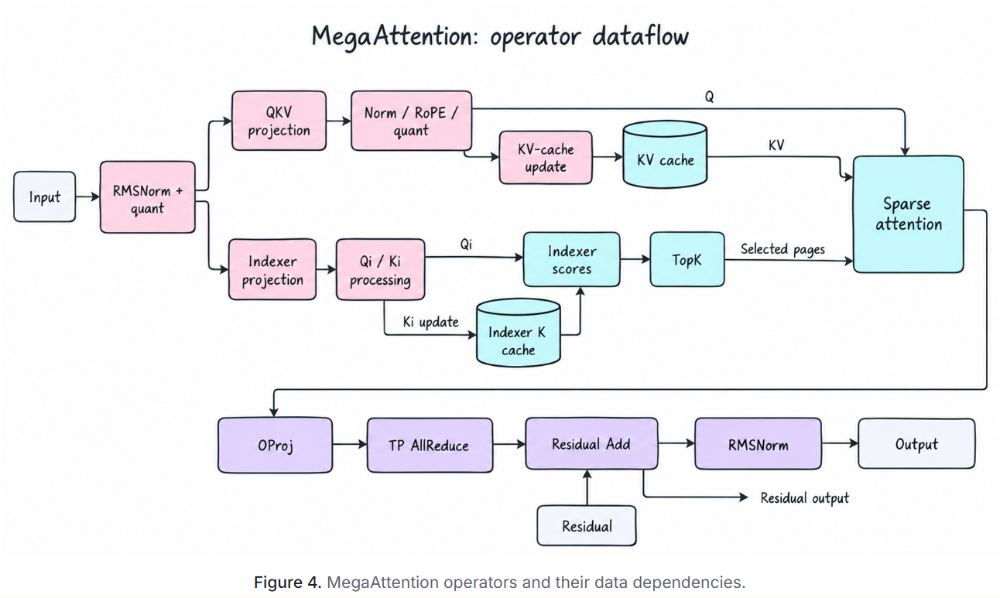
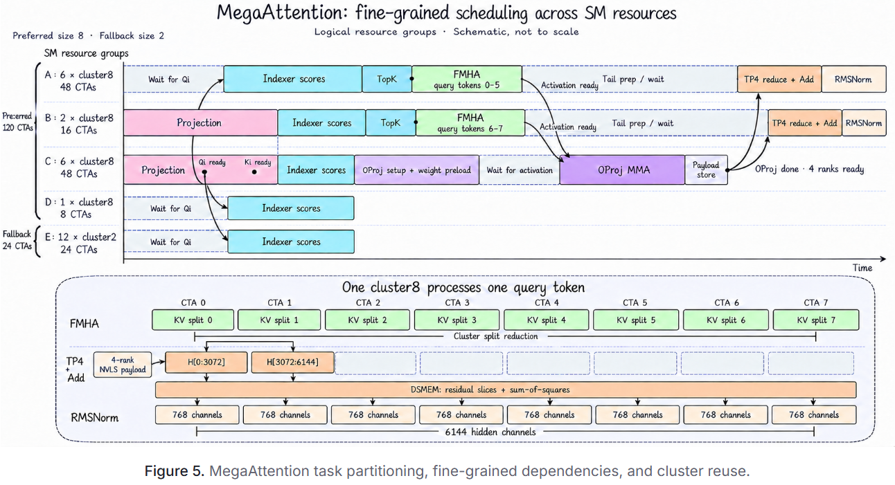
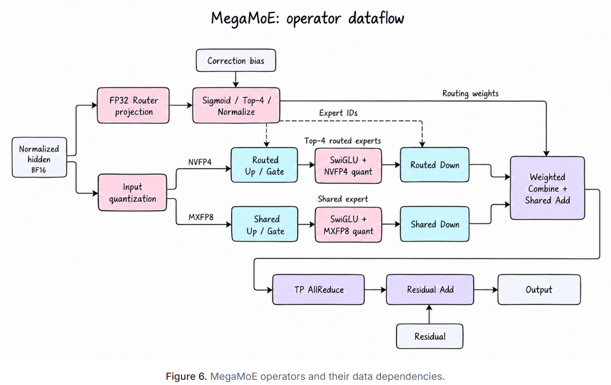
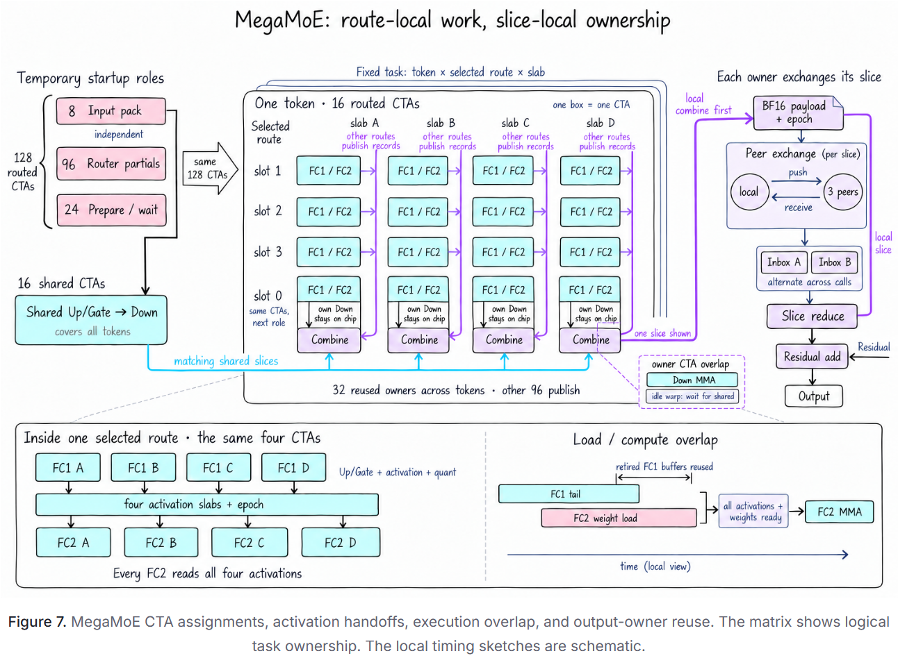
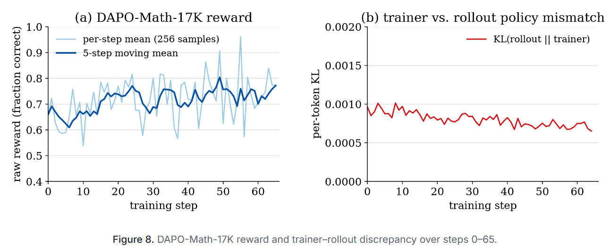

SGLang 和 Miles 为 MiniMax M3.1 Flash 提供 day-0 推理和强化学习支持。 SGLang 通过 MSA-V1 稀疏注意力内核、超低延迟 MegaKernels、DSpark 和 DFlash2 推测解码以及 HiCache 为 M3.1 Flash 提供服务。 Miles 通过强化学习来训练 M3.1 Flash，并使用 SGLang 进行部署。
对于代理工作负载，SGLang 针对单请求延迟和许多并发会话的高吞吐量服务优化了 M3.1 Flash。借助超低延迟 MegaKernels，SGLang 在 4× B300 上以大约 1K token/s的速度解码单个请求，接受长度为 5。在 AgentX 编码代理跟踪中，一个 TP4 副本在 96 个并发会话和 3.07 的接受长度下维持每个 GPU 大约 100K token/s。
模型概览
MiniMax M3.1 Flash 是一种原生多模态 MoE 模型。它读取超过一百万 个 token的文本、图像和视频。模型权重发布在 Hugging Face 上，完整详细信息位于模型卡中。

MiniMax M3.1 Flash 的新变化
MiniMax M3.1 Flash 保留了 MiniMax M3 主干和视觉编码器，但有以下变化：

跨所有 60 层的每个 token 的 KV 缓存，包括索引器键缓存。 * 注意力和索引器内核通过 NVFP4 KV 缓存使用 FP8 查询进行计算。开始使用
请按照 MiniMax M3.1 Flash SGLang Cookbook 获取部署说明。其命令生成器涵盖了每个支持的 GPU 和服务策略。在 B300 上，我们建议针对代理工作负载使用此配置，并使用 HiCache 和 DSpark / DFlash2 推测解码：
DSparkDFlash2
FMHA_SM100_ALLOW_JIT=1 \
sglang serve \
--model-path MiniMaxAI/MiniMax-M3.1-Flash \
--trust-remote-code \
--reasoning-parser minimax-m3 \
--tool-call-parser minimax-m3 \
--tp 4 \
--moe-runner-backend flashinfer_trtllm_routed \
--speculative-algorithm DSPARK \
--speculative-use-block-verification \
--enable-hierarchical-cache \
--hicache-ratio 2 \
--cuda-graph-backend-prefill breakable \
--chunked-prefill-size 32768 \
--max-running-requests 128 \
--cuda-graph-max-bs-decode 128 \
--mem-fraction-static 0.8 \
--tokenizer-worker-num 8
该命令在 lmsysorg/sglang:dev-minimax-m31-flash 映像中运行，其中包括 MSA 内核所需的 CUDA 13.4 工具包。第一次启动会编译这些内核并缓存它们以供以后启动。
SGLang Day-0 支持
功能支持
下表列出了 M3.1 Flash 集成的服务功能。各个执行路径的可用性取决于硬件和部署配置。
| 特征 | 状态 | 覆盖范围 |
|---|---|---|
| API | 支持 | 工具调用、推理努力、思维控制 |
| 多模态 | 支持 | 文本、图像和视频输入 |
| 缓存 | 支持 | L2 主机内存和L3Mooncake 存储，兼容推测解码 |
| 推测解码 | 支持 | DSpark（模型检查点中发送的草稿）、DFlash2（由 RadixArk 训练的草稿）、采样提案的区块验证 |
| CUDA 图 | 支持 | 解码 CUDA 图形、可破坏的 CUDA 图形以进行预填充 |
| 分解 | 支持 | EPD（编码与解码解耦） |
| 并行性 | 支持 | TP、DP 注意、EP |
硬件支持
Day-0 支持涵盖 NVIDIA Blackwell、NVIDIA Hopper 和 AMD Instinct GPU，每个 GPU 都有自己的内核路径。
| NVIDIA Blackwell GB300、B300、B200 | NVIDIA Hopper H200 | AMD Instinct MI350X、MI355X | |
|---|---|---|---|
| 检查点 | NVFP4 | NVFP4 | NVFP4、Quark MXFP4 |
| KV 缓存 | NVFP4 KV 缓存和索引器 K 缓存 | BF16 或 FP8 KV 缓存，与索引器 K 缓存处于相同的数据类型 | NVFP4 KV 缓存和索引器 K 缓存，或带有 Quark MXFP4 检查点的 FP8 |
| 注意力 | MSA-V1 稀疏注意力和索引器 MegaAttention MegaKernel batch size 1 | Triton 稀疏注意力、分页索引器评分和稀疏解码 | 用于解码和预填充 Triton 索引器评分的 Gluon 稀疏注意力 |
| MoE | TRT-LLM MoE、DeepGEMM MegaMoE MegaMoE MegaKernel batch size 1 | Marlin W4A16 | AITER FlyDSL 内核上的 MXFP4 MoE |
除了注意力和 MoE 内核之外，SGLang 还融合了 Blackwell 和 Hopper 上的全归约、标准化、激活、量化和缓存写入，并打包token收集以用于 DP 注意力。在 AMD 上，SGLang 融合了 QK-norm、RoPE 和 KV 缓存写入、RMSNorm 和 SwiGLU 之后的 FP8 量化，以及具有 top-k 和专家排序的路由器。 MXFP8 注意力、密集和共享专家投影在 AITER 上作为块 FP8 GEMM 运行，并针对 M3.1 调整了表格。 All-reduce 对于小消息使用 AITER 自定义 all-reduce，对于大消息使用 INT8/INT4 快速 all-reduce。
在 B300 上，在我们测量的每个batch size下，TP4 处的 TRT-LLM MoE 比 TP4/EP4 处的 DeepGEMM MegaMoE 解码速度更快，batch size为 1 时解码速度快 59%，batch size 32 时解码速度快 20%，因此建议部署使用它。 DeepGEMM MegaMoE 保持更高的预填充吞吐量。在 128K 上下文下的 H200 上，Hopper 优化在batch size 1 时将 TP8 解码吞吐量提高了 1.38 倍，在batch size 22 时提高了 1.49 倍。在没有推测解码的 MI355X 上，单独的优化在batch size 1 时将解码提高了 61%，预填充提高了 25%。
每个平台的启动方法都在 SGLang Cookbook 中。如有疑问，请加入 SGLang Slack。
DFlash2 推测解码
除了检查点附带的 DSpark 草稿之外，SGLang 还通过RadixArk 训练的草稿模型 支持 M3.1 Flash 的 DFlash2。来自 M3.1 Flash 的隐藏状态的草稿条件，将它们投影到自己的 KV 缓存中，并重用目标模型的token 嵌入和 LM 头。它在一次前向传递中提出了多个未来token。然后，M3.1 Flash 会一起验证这些提案，因此接受的前缀可以通过每个目标模型调用的多 个 token来提前生成。
DFlash2 将并行起草与草稿块中位置之间的动态卷积以及对候选 token之间的依赖关系进行建模的轻量级候选选择器相结合。 SGLang 在同一个 CUDA 图中捕获draft 与候选选择，并使用其重叠调度程序来减少 GPU 操作之间的 CPU 开销。 DFlash2 草稿使用 DFLASH 推测解码路径。
区块验证。 对于 DSpark 和 DFlash2 提案样本，SGLang 通过 --speculative-use-block-verification 支持区块验证。它使用草稿和目标模型下草稿前缀的联合概率来决定接受多少块。接受前缀后，验证者会采样一个修正 token，如果所有提案都被接受，则抽取一个目标模型奖励token。这可以增加可接受的前缀长度，同时保留目标采样分布。该该方法适用于采样候选。该标志不会改变贪婪验证。
AgentX 性能

图 1. 4× B300 上一个 TP4 副本的每个 GPU 的 AgentX 吞吐量和每个用户的解码速度。AgentX 重播 393 个记录的编码代理会话 (semianalysis_cc_traces_weka_062126)。我们在带有 DSpark 的 4× B300 上以 1 到 96 个并发会话提供带有 SGLang 的 MiniMax M3.1 Flash 作为一个 TP4 副本，DSpark 接受长度固定为每步 3.07 个 token，并且从 48 个会话启用 HiCache。吞吐量计算每个 GPU 的输入和输出token，包括缓存的prompt token。每用户速度是 P90 token 间延迟的倒数。
吞吐量从每个 GPU 一次会话的 5.4K token/s增长到 96 个会话的 101.5K，而每用户速度从 353 token/s增加到 44 token/s。 HiCache 容量在高并发时很重要。在 96 个会话中，将主机池从 2 倍提高到 4 倍，GPU KV 缓存将每个 GPU 的吞吐量从 76.2K token/s提升到 101.5K token/s，每用户速度从 26 token/s提升到 44 token/s，因为需要再次预填充的被淘汰前缀更少。

图 2. 4× MI350X 上一个 TP4 副本的每个 GPU 的 AgentX 吞吐量和每个用户的解码速度。我们在 4× MI350X 上以 1 至 64 个并发会话运行相同的 AgentX 设置，并在 2× 主机池上运行 48 个会话的 HiCache。吞吐量从每个 GPU 一次会话的约 5K token/s增长到 64 个会话的约 81K，而每用户速度从约 318 token/s增加到 61 token/s。
超低延迟推理
在小batch size下，解码延迟取决于各个运算符以及它们之间的转换。单独的内核调度、中间写入和重读以及等待整个前一阶段都会增加延迟。
MegaKernel 将多个阶段引入一个 GPU 内核，协调各个算子之间的资源。不同的 CTA 和集群可以同时执行不同的阶段，下游任务在输入准备好后立即推进。权重加载和初始化与上游计算重叠，而 CTA 和集群继续执行后续任务，重用片上数据和资源。围绕任务依赖性组织执行可以缩短关键路径。
按照这种方法，我们将batch size为 1 的每个 M3.1 Flash 解码 Transformer 块实现为两个 MegaKernels：MegaAttention 和 MegaMoE。每个模块都涵盖其各自的模块，包括通信和后处理，以最大限度地减少每层延迟。
SGLang 通过 SGLang 低延迟模式 的插件框架运行这些 MegaKernels。借助 --monokernel-backend msa，SGLang 将单个请求验证步骤分派给 MegaAttention 和 MegaMoE，并为大批量保留标准路径。
使用 MegaKernels 达到约 1000 TPS

图 3. MiniMax M3.1 Flash、4× NVIDIA B300 (TP4) 上一个请求的解码吞吐量，推测接受长度固定为 5。1K 时为 2.15×，32K 时为 2.04×，64K 时为 2.07×，128K 时为 2.05×，256K 时为 1.98×。MegaAttention
MegaAttention 集成了输入归一化和量化、QKV 和索引器投影、RoPE 和 KV 缓存更新、索引器评分和 TopK 选择、稀疏注意力、输出投影以及带有残差加法和 RMSNorm 的张量并行缩减。

图 4.MegaAttention 运算符及其数据依赖性。64 个 CTA 执行预测，而其他 CTA 在 Qi 准备就绪后开始索引器评分。完成投影的CTA随后加入索引工作。建立索引后，8 个集群执行 TopK 和 FMHA，另外 6 个集群准备并执行 OProj，每个集群 8 个 CTA。这种分区跨阶段重用资源，并将下游准备与上游计算重叠。

图 5.MegaAttention 任务分区、细粒度依赖关系和集群重用。一旦 Qi 准备好索引器查询token，内核就会发布共享就绪信号。使用现有的历史索引器 K 缓存，索引器可以与剩余的投影工作同时对历史页面进行评分，而无需等待整个投影阶段完成。然后，TopK 结果通过每个 FMHA 集群内的共享内存传递，从而减少中间数据移动。
OProj CTA 在上游计算期间初始化其管道并预加载权重，然后在加载 FMHA 输出之前等待相应的激活组就绪信号。在输入准备之前做好准备可以缩短后续的执行路径。
通信尾部重用执行 FMHA 的每个 token 集群。 OProj 直接写入 TP4 通信有效负载。一旦所有本地 OProj 输出和所有 4 个等级都准备就绪，每个 token 集群的 2 个 CTA 将执行 NVLS 归约和残差加法，累积 RMSNorm 的平方和。他们通过分布式共享内存将残差切片和统计数据传递给所有 8 个 CTA，这些 CTA 合作完成 RMSNorm。残余结果作为模块输出写入全局内存，而 RMSNorm 消耗集群本地切换，避免重新加载。
MegaMoE
MegaMoE 在每级 1 个协作内核启动中集成了路由、输入量化、路由和共享专家计算、加权组合、张量并行缩减和残差加法。

图 6.MegaMoE 运算符及其数据依赖性。路由与输入量化重叠。共享专家从打包输入开始，无需等待路由选择，从而允许它重叠路由专家计算。
所示的实现将 128 个 CTA 分配给路由工作，将 16 个 CTA 分配给共享专家。路由 CTA 在入口处执行输入打包和路由器部分作业，然后继续进行专家计算。任务通过token、选定路由槽和板进行分配。实际的专家 ID 来自路由器。共享 CTA 跨所有token划分通道。

图 7.MegaMoE CTA 分配、激活切换、执行重叠和输出所有者重用。该矩阵显示了逻辑任务所有权。本地时序草图是示意性的。4 个 CTA 在token的每个选定路线上进行合作。每个计算上/门投影 (FC1) 切片，应用激活和量化，然后通过下投影 (FC2) 生成输出切片。每个 FC2 CTA 都会消耗所有 4 个 CTA 的激活切片。生产者发布带有纪元标记的记录，允许消费者识别相同token和路线的就绪数据，而无需等待不相关的路线。
FC2 重量负载与 FC1 尾部重叠。一旦缓冲区区域的最终 FC1 MMA 读取完成，权重生成器就会重用该共享内存区域作为 FC2 权重，启动下游传输，同时继续剩余的 FC1 工作。 FC2 MMA 仍等待所有 4 个 CTA 以及相应的重量值和秤的完全激活。
对于每个 token和输出板，分配给选定路由槽 0 的 CTA 继续进行组合和通信，从而提供 32 个重用的输出所有者。每个路由都在共享内存中保留自己的 Down 结果，并通过纪元标记记录收集其他 3 个路由的匹配输出。在 Down 计算期间，空闲的消费者扭曲等待匹配的共享专家切片，将准备情况检查与计算重叠。所有者在使用该切片之前仍然会进行同步。
每个所有者结合其排名的共享和加权路由贡献，然后将带有纪元标签的 BF16 记录推送到对等排名，同时提供数据和准备情况。接收器在 2 个缓冲区之间交替，并且仅接受当前纪元记录。一旦切片的对等记录准备就绪，所有者就会按照固定的排序顺序将它们与其本地贡献相加，并添加残差以产生最终输出。
Miles Day-0 支持
Miles 在第 0 天支持 MiniMax M3.1 Flash 强化学习、Megatron 训练并使用 SGLang 生成部署。
| 区域 | 状态 | 覆盖范围 |
|---|---|---|
| 训练后端 | 支持 | Megatron |
| 推出 | 支持 | SGLang，BF16 |
| 并行性 | 支持 | DP、TP、PP、EP、SP |
| 执行 | 支持 | 集中培训和部署 |
| 路由重播 | 支持 | MoE 路由器的rollout路由重播 |
| 验证运行 | 支持 | DAPO-Math-17K、32 GB300 GPU 上的 GRPO，66 个步骤 |
稀疏注意力。 Megatron-Core 插件在每一层上实现 MSA：与 SGLang 中一样，索引器为每个 KV 头选择 16 128 个 token 块，并且 Triton 内核负责处理它们。索引器被冻结，并且其 top-k 在训练中重新计算。它与 SGLang 的选择相匹配，除了接近平局之外。
训练器 - rollout一致性。 rollout路由重放修复了 MoE 专家路径，并且 q/k 标准化和 RoPE 在 FP32 中通过单个 BF16 转换运行，如 SGLang 的融合内核中一样。
同地训练和部署。 训练和部署共享 32 个 GPU。优化器矩流到节点本地 NVMe，并将更新的 BF16 权重写入 SGLang 的融合 q/k/v + 索引 GEMM，保持捕获的 CUDA 图有效。
验证运行
下图显示了在 DAPO-Math-17K 上运行的 GRPO 的步骤 0-65，在 32 GB300 GPU 上具有 4K token响应上限（TP4、PP4、EP8，每步 256 个样本）。五步平均奖励从 0.64 上升到 0.77，trainer和部署之间的每个 token KL 保持在 0.00065 到 0.00101 之间，没有持续增长。

图 8.步骤 0-65 中的 DAPO-Math-17K 奖励和trainer推出差异。开始使用 Miles
Miles 配方下载该版本，将其转换为 BF16，并启动训练：
# 4-layer model on one node of 4 GB300 GPUs, to check the setup
python scripts/run_minimax_m3_1_flash.py --model-name MiniMax-M3.1-Flash-4layer-bf16 --num-nodes 1
# Full model on 8 nodes of 4 GB300 GPUs, with the nodes joined to one ray cluster
MILES_SCRIPT_EXTERNAL_RAY=1 python scripts/run_minimax_m3_1_flash.py \
--model-name MiniMax-M3.1-Flash-bf16 --num-nodes 8
致谢
感谢 MiniMax、NVIDIA 和 AMD 团队与 SGLang & Miles 团队在 Day-0 支持 MiniMax M3.1 Flash方面的合作。
MiniMax：张志、程海、陈同、张丽媛、潘玉东、李静欣
原文交互图实验室
这里保留了原文的原生交互控件，可使用上方菜单切换图表，并操作播放、时间轴、场景按钮或曲线开关。